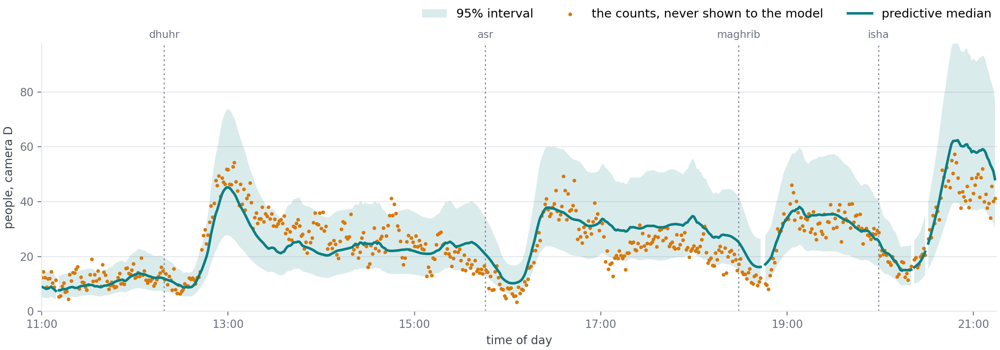

Small, Noisy Data from Madinah

My first Kaggle competition. I couldn't resist: the data came from Madinah.
The Madinah Ethical AI Competition, organised by KAUST Academy, gave us thirteen cameras that count people every minute. The table had holes: a camera off for a whole day, short gaps, and the next 15 minutes, which had not happened yet. The task was to fill them all.
The data are small and noisy: two complete days, a few fragments, and two days with holes to fill. On the smallest cameras the count can jump by a third from one minute to the next.
What statistics can do with that
AI and machine-learning tools may climb higher on a leaderboard. But with little data and a lot of noise, a statistical model can do something they rarely do: explain the data while it predicts, and say how sure it is. With one latent Gaussian model in pyINLA, statistics can:
- Find the structure. The crowd follows the prayers, not the wall clock, and the data choose that clock over the time of day.
- Separate what is normal from what is unusual. Each count splits into the camera's typical day and what was different today, with how long a surprise lasts: 10 to 20 minutes here.
- Show who moves together. Three large cameras share their swings; the small ones each live their own life.
- Fill every kind of hole with one model. A hidden camera, a short gap and the next 15 minutes come from the same fit.
- Say how sure it is. Every prediction comes with an interval, and 92 to 98% of the held-out counts fell inside the 95% intervals.
I turned the analysis into a seven-part tutorial that builds the model one term at a time, from the raw counts to checking the predictions, with the code and notebooks. Feel free to use it if you work on similar data: crowd counts, sensor networks, or any table with holes.
A leaderboard ranks predictions.
A model you can read tells you why they are right, and when they are not.